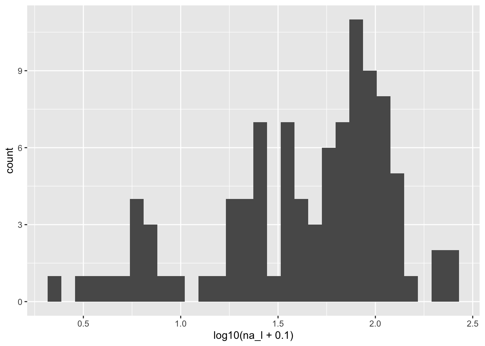
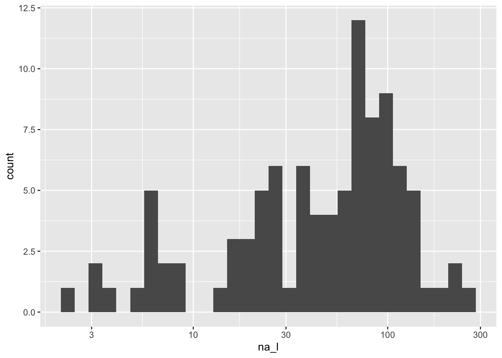
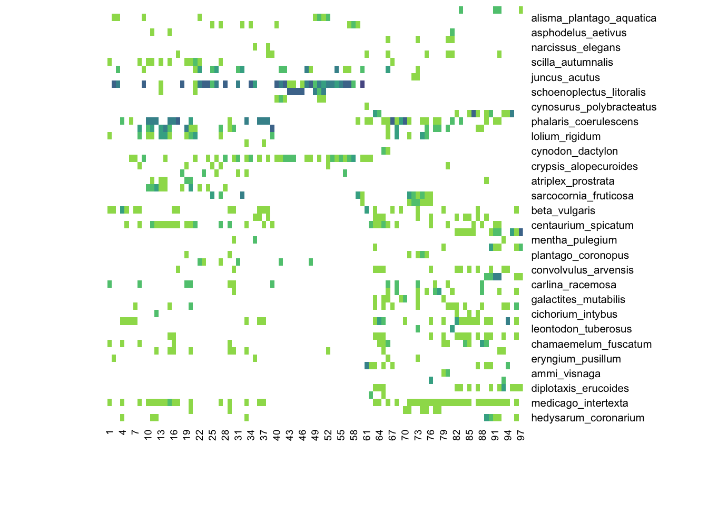
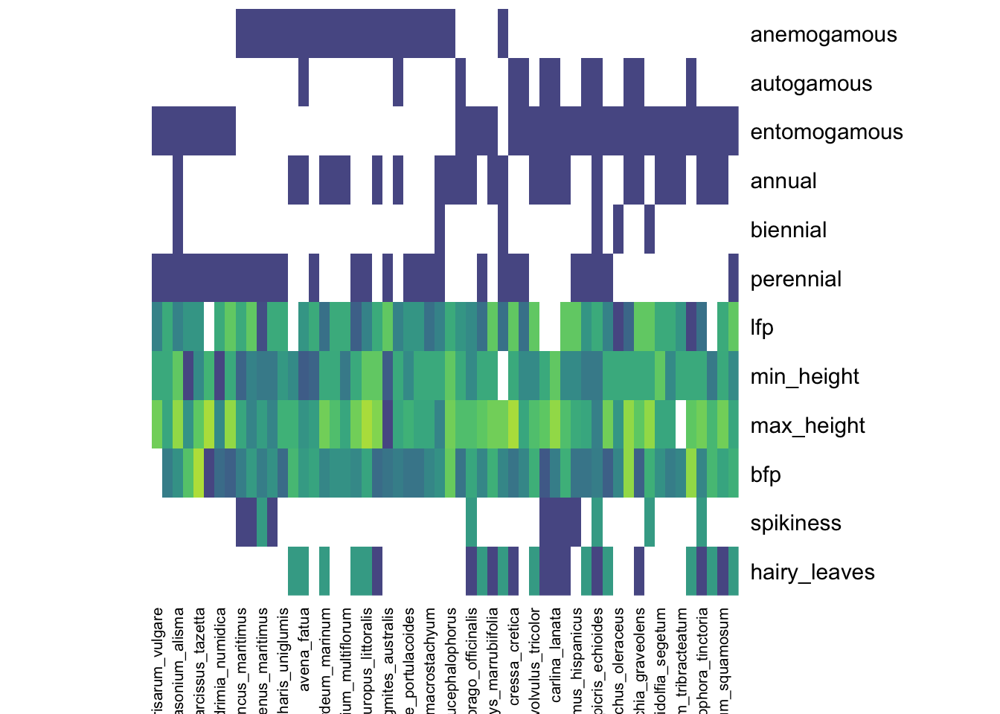
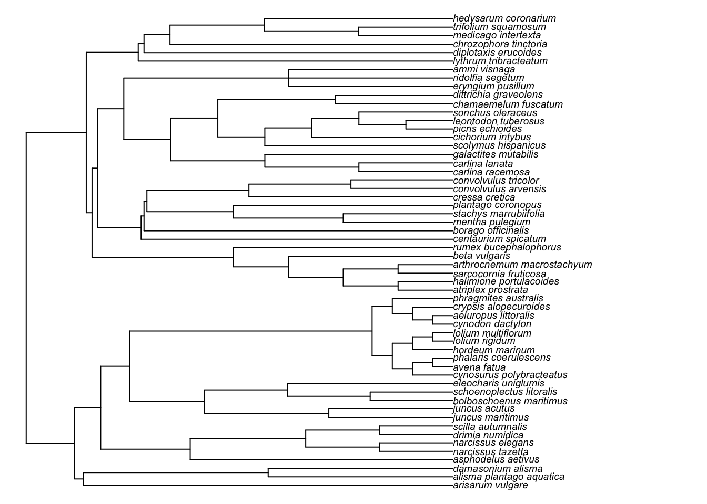

Chapter 5 Data Transformations and Exploration
5.1 Why transform?
Transforming data for the sake of meeting assumptions of statistical tests is a common practice in ecology. For example, many statistical tests assume that the data are normally distributed, and if they are not, a transformation such as a log10 transformation may be applied to make them more normal. In quantitative community ecology, we may apply transformations to change the relative influence of species and sites so that multivariate analyses reflect ecological patterns of interest rather than artifacts of scale, abundance, or sampling intensity.
5.1.1 Example transformations
5.1.1.1 log10
A log10 transformation is very common when dealing with skewed data. Here’s an example using one of the environmental variables, na_l, which is soluble sodium (i.e., the sodium ion concentration measured per liter of soil solution).
Without transformation:
## `stat_bin()` using `bins = 30`. Pick
## better value with `binwidth`.
With log10 transformation:
## `stat_bin()` using `bins = 30`. Pick
## better value with `binwidth`.
NOTE: We did a log10 transformation “on the fly” in the ggplot call above, but we could also create a new variable in the
envdata frame that is the log10 transformation ofna_l. Also, we added 0.1 to avoid taking the log of zero.
A ggplot2 alternative approach:
## `stat_bin()` using `bins = 30`. Pick
## better value with `binwidth`.
5.1.2 Scaling
There are many approaches to scaling data. One of the most common approaches is to z-transform data, which centers the data at zero and scales it to have a standard deviation of one. Another common approach is to scale values to a range of 0 to 1. In both cases, the goal is to make the data more comparable across variables and to reduce the influence of extreme values.
There is a function in base R called scale() that can be used to z-transform data and it is not difficult to write a function to scale data to a range of 0 to 1.
However, we are going to use the decostand() function in the vegan package, which has many options for scaling and standardizing data.
A key advantage to using decostand() is that it can be applied to a data frame or matrix of data, which is very convenient when we have many variables to scale.
Scaling all our environmental variables to a range of 0 to 1:
# Create a new, scaled data frame of environmental variables
env_scaled <- vegan::decostand(env, 'range')OPTIONAL: Visualize the relationships among environmental variables before and after scaling using GGally::ggpairs()
5.1.3 Presence /absence
For some analyses, we may want to convert species abundances to presence/absence data.
Here are two ways to do this, one using base R and one using the decostand function.
5.1.4 Hellinger transformation
Another transformation that is commonly used in community ecology is the Hellinger transformation. This transformation converts species abundances to square-root-transformed relative abundances. It down-weights dominant species and produces a data structure that is well suited for Euclidean ordination methods such as PCA and RDA. But be careful, the Hellinger transformation shifts the focus from absolute abundances to relative community composition, which may or may not match the ecological questions you are interested in.
5.2 Outliers
Outliers in our data is always a concern (or at least somethign to be aware of!). A quick way to search for multivariate outliers is to use a distance/dissimilarity matrix. A multivariate outlier has unusual values for a combination of multiple variables (McCune and Grace 2002). We can identify them as the sample unit(s) which exceed a defined number of standard deviations away from the grand mean (i.e., a large z-score).
In the code below, we first define a new function called outliers() that takes a data frame or matrix of species abundances and calculates the mean distance of each site to all other sites, then calculates the z-score for each site, and finally identifies which sites are outliers based on a user-defined threshold (default is 2 standard deviations).
# User-defined `outliers` function
outliers <- function (x, mult=2, method='bray') {
d <- as.matrix(vegan::vegdist(x, method=method, binary=F, diag=T, upper=T))
diag(d) <- as.numeric(1) # avoid zero-multiplication
m <- apply(d, 2, mean) # site means
z <- scale(m) # z-scores
data.frame(mean_dist = m, z = z, is_outlier = abs(z) >= mult)
}
# Use our new function
o <- outliers(spe, mult=2)
head(o, 7)## mean_dist z is_outlier
## 1 0.8621210 0.3641452 FALSE
## 2 0.8151145 -0.7867036 FALSE
## 3 0.8151016 -0.7870216 FALSE
## 4 0.8348617 -0.3032375 FALSE
## 5 0.8915303 1.0841658 FALSE
## 6 0.8592909 0.2948558 FALSE
## 7 0.8657330 0.4525754 FALSE## [1] 32 45 95 975.3 Testing the validity of our species matrix
Before proceeding with most multivariate analyses, our species abundance matrix must have 1) no missing values, 2) every site must have at least one species observation, and 3) every species must occur in at least one site.
## [1] TRUE## [1] TRUE## [1] TRUE5.4 Visualizing our community data
Let’s map the spatial coordinates.
### spatial
plot(xy, pch=19, col='grey', xlab='Easting', ylab='Northing',
main='Map of sites in study area')
Plot the species abundance matrix as a heatmap. Here we are using the tabasco() function in the vegan package, which generates heatmaps of matrices. Darker colors indicate higher values.

Plot the scaled soils (environmental) matrix as a heatmap.

Plot the scaled traits matrix as a heatmap.
### traits
tra_scaled <- vegan::decostand(tra, 'range')
vegan::tabasco(tra_scaled, col=get_palette())
Plot the phylogenetic tree.